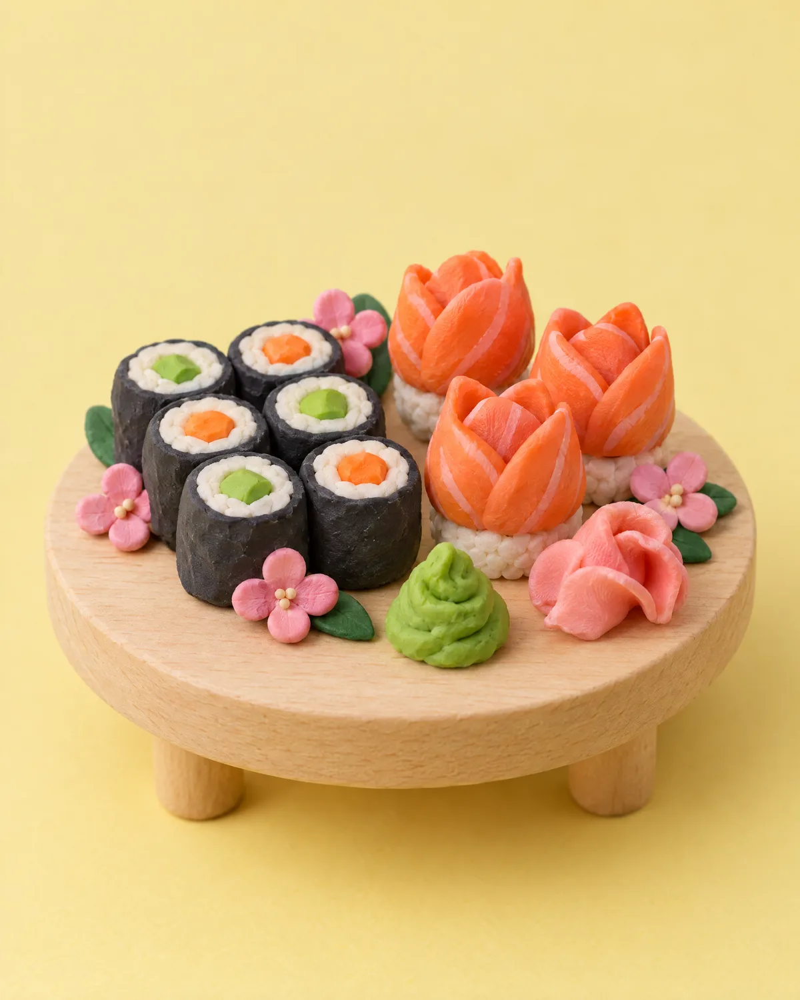
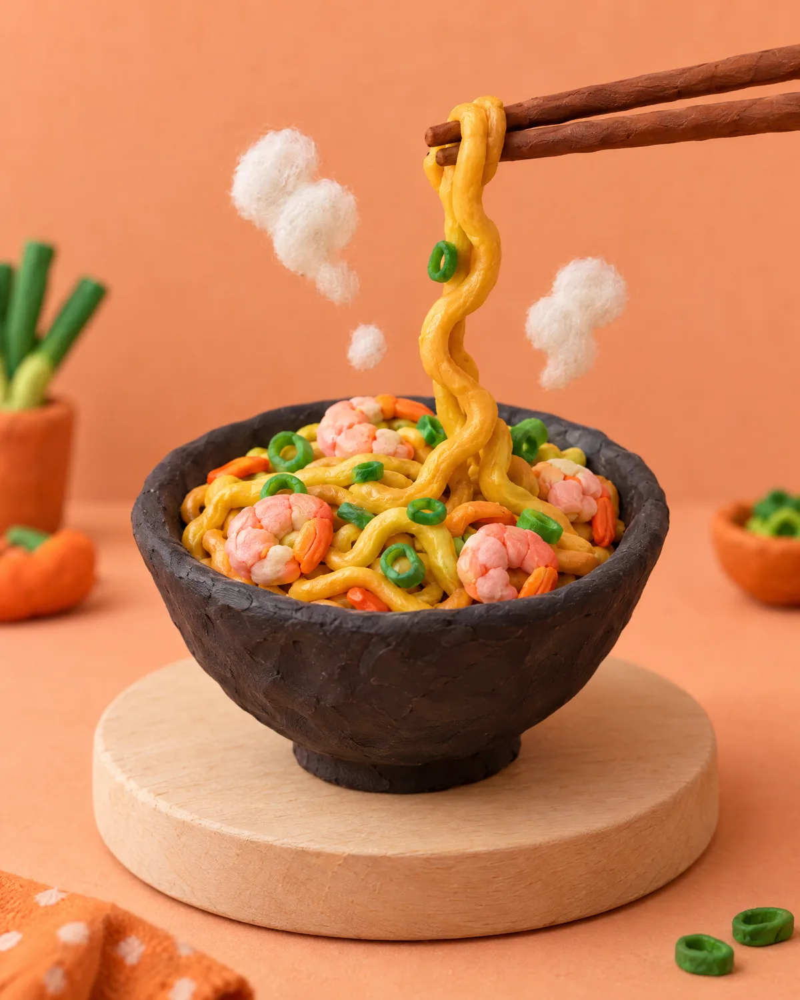
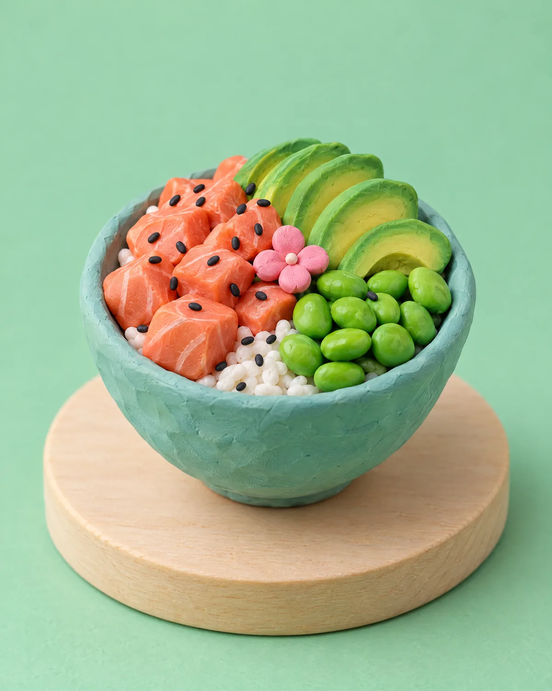
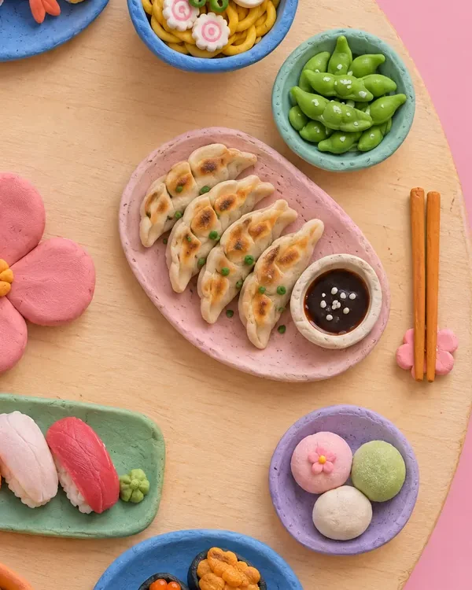
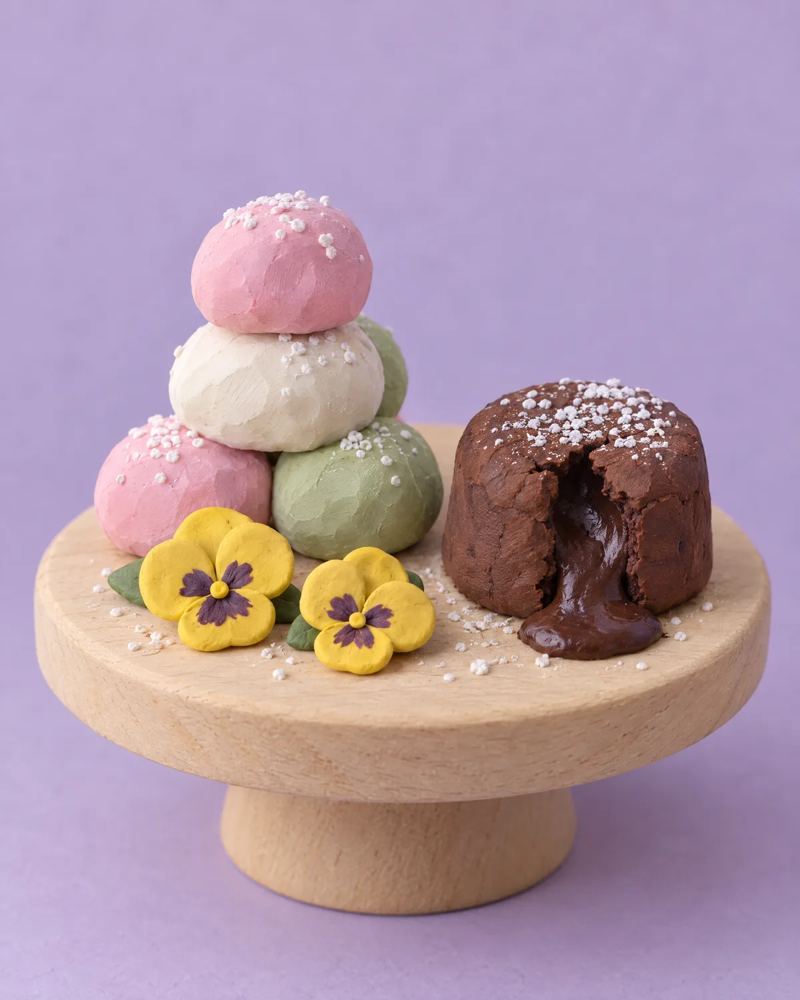
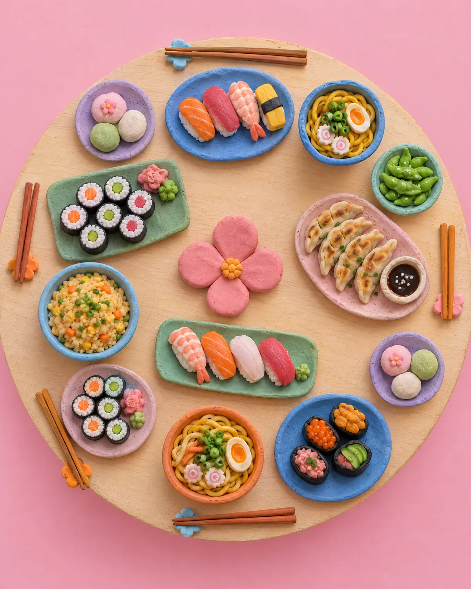

Sushi
Plateaux
- NIGIRI Salmon10 pièces · 10 nigiri saumon
- Salmon Lovers22 pièces · 8 California saumon avocat, 8 Spring roll saumon avocat, 6 Sushi saumon
- Fish LOVERS22 pièces · 8 California saumon avocat, 8 California thon avocat, 3 Sushi saumon, 3 Sushi thon
- Super Mix20 pièces · 8 California forêt tempura, 5 sashimi saumon, 3 sushi saumon, 2 sushi teriyaki thon, 2 sushi teriyaki saumon
- Salmon Dream40 pièces · 8 Maki saumon, 8 California saumon avocat, 8 California saumon concombre cheese, 8 Saumon roll cheese, 8 Spring roll saumon avocat, 1 Wakame, 1 Edamame, 1 Salade de choux
- Super Niku40 pièces · 8 Maki thon cuit, 8 California scampis concombre, 8 California surimi avocat, 8 California poulet concombre, 8 California bœuf jardinier, 1 Wakame, 1 Edamame, 1 Salade de choux
- Osaka66 pièces · 8 Maki saumon, 8 Maki thon spicy, 8 California forêt tempura, 8 California saumon avocat, 8 Saumon roll cheese, 8 Spring roll saumon avocat, 8 Spring roll thon cuit concombre, 2 Sushi thon, 4 Sushi saumon, 2 Sushi teriyaki thon, 2 Sushi teriyaki saumon
- Tokyo80 pièces · 8 Maki avocat, 8 Maki thon cuit, 8 California chicken parmesan, 8 California saumon avocat, 8 Saumon roll cheese concombre, 8 Spring roll saumon avocat, 8 Passion Roll, 4 Sashimi thon, 4 Sashimi saumon, 4 Sashimi crevettes, 4 Tulip cheese, 2 Sushi thon, 2 Sushi saumon, 2 Sushi teriyaki thon, 2 Sushi teriyaki saumon
Combo box
- Combo A22 pièces · 4 maki saumon, 4 maki surimi, 4 maki concombre sésames, 4 maki thon cuit, 6 sushi saumon
- Combo Bvégétarien · 26 pièces · 2 gunkan mango, 4 maki carotte, 4 maki concombre sésames, 8 soja roll concombre cheese, 8 spring roll avocat cheese
- Combo C24 pièces · 24 fines tranches de sashimi mixtes
- Combo D28 pièces · 4 sushi saumon, 4 california saumon avocat, 4 fried roll saumon cheese, 8 california foie délicieuse, 8 california fried chicken parmesan
- Box L34 pièces · 2 nems, 4 scampis fried, 4 samoussas, 4 maki surimi, 4 maki thon cuit, 8 fried roll saumon spicy, 8 fried roll saumon fraisée
- Box V26 pièces
- Box S24 pièces · 2 sushi saumon, 2 sushi thon, 4 sushi teriyaki saumon, 4 crevettes panées au PDT, 4 harumaki, 8 fried roll saumon avocat
- Box X48 pièces
Nigiri
- Nigiri Saumon
- Nigiri Saumon Cheese
- Nigiri Teriyaki Saumon
- Nigiri Thon
- Nigiri Teriyaki Thon
- Nigiri Teki Crevette
- Nigiri Teki Omelette
- Nigiri Avocat Cheese
Sashimi
- Sashimi Saumon6 pièces
- Sashimi Thon6 pièces
Tataki
- TATAKI Saumon6 pièces
- TATAKI Thon6 pièces
Tulip
- Tulip Ikura2 pièces
- Tulip Cheesevégétarien
- Tulip Mangue
- Tulip Saumon
- Tulip Thon
Gunkan
- Gunkan Saumon
- Gunkan Tuna
- Gunkan Ikura
- Gunkan Thon Cuit
Temaki
- Temaki Crevette Avocat Menthe
- Temaki Saumon Avocat
- Temaki Saumon Spicy Concombre
- Temaki Saumon Cheese Avocat
- Temaki Thon Avocat
- Temaki Thon Spicy Concombre
- Temaki Scampis Frits
- Temaki Ikura Avocat
Maki roll
- Maki Avocatvégétarien
- Maki Avocat Cheesevégétarien
- Maki Concombre Sésamevégétarien
- Maki Concombre Cheesevégétarien
- Maki Saumon
- Maki Saumon Spicy
- Maki Saumon Cheese
- Maki Thon
- Maki Thon Spicy
- Maki Thon Cuit
- Maki Crevette
- Maki Scampis Fried
Soja rolls
- Soja Roll Avocatvégétarien
- Soja Roll Avocat Cheesevégétarien
- Soja Roll Concombre Sésamevégétarien
- Soja Roll Concombre Cheesevégétarien
- Soja Roll Saumon8 pièces
- Soja Roll Saumon Spicy
- Soja Roll Saumon Cheese
- Soja Roll Thon
- Soja Roll Thon Spicy
- Soja Roll Thon Cuit8 pièces
- Soja Roll Crevette
- Soja Roll Scampis Frits
Saumon rolls
- Saumon Roll Cheese
- Saumon Roll Cheese Concombre
- Saumon Roll Cheese Avocat
- Saumon Roll Cheese Mango
- Saumon Roll Cheese Fraise
California rolls
- Concombre Avocat
- Avocat Cheese8 pièces
- Pacific
- Saumon Avocat
- Saumon Avocat Cheese
- Saumon Concombre Spicy
- Saumon Fraise
- Surimi Avocat
- Thon Avocat
- Thon Concombre Spicy
- Thon Cuit Avocat
- Thon Cuit Pomme
- Chicken Parmesan
- Ebi Avocat Spicy
- Ebi Forêt
- Tango Mango
- Ebi Fraise
- Foie Gras Délicieux
Spring rolls
- Avocatvégétarien
- Avocat Cheesevégétarien
- Concombrevégétarien
- Concombre Cheesevégétarien
- Saumon Avocat
- Saumon Avocat Cheese
- Saumon Concombre Spicy
- Saumon Fraise
- Thon Avocat
- Thon Concombre
- Thon Cuit Avocat
- Crevettes Avocat
- Tuscan
- Fried Chicken Avocat
- Chicken Mangue
- Ebi Tempura Piquant
- Ebi Mango
- Ebi fraisée
Fusion rolls
- T RollFilet de bœuf, avocat, concombre, betteraves, patates douces, panais, pomme de terre, ciboulette, sauce pikanto
- G RollScampis tempura, thon, massago, piquant, avocat, concombre, carotte, ciboulette
- V RollConcombre émincé, radis jaune, betteraves, patates douces, panais, pomme de terre, avocat, radis rouge, fromage Philadelphia, carotte jeune, édamame
- Passion RollSaumon, thon, avocat, massago, sauce pikanto, sauce teriyaki, chips, piment, ciboulette
- Long RollScampis tempura, mangue, avocat, concombre, sauce viné
- Feng RollScampis tempura, mangue, avocat, concombre, sauce kioly
- X RollSaumon, surimi, massago, amandes séchées, chili doux, avocat, ciboulette
- Love RollSaumon, thon, surimi, tobiko, massago, sauce teriyaki, avocat, chips violette, ciboulette, piment
- D RollFilet de poulet, avocat, concombre, betteraves, patates douces, panais, pommes de terre, ciboulette, sauce pikanto
Hot rolls
- Phila RollSaumon, avocat, massago, cébette, sauce piquante et fromage Philadelphia
- Umi RollSurimi, saumon, avocat, mangue, amandes et sauce mimili
- Igo RollSaumon, crevettes, fraise, fromage Philadelphia et sauce fiégo
- Pura RollScampis tempura, concombre émincés, mangue, sauce mimili et sauce pura
Crunchy
- Crunchy saumon8 pièces · saumon, concombre ou avocat
- Crunchy ebi8 pièces · Crevette, Tobigo, concombre ou avocat
- Crunchy chicken8 pièces · Pané de poulet, parmesan, concombre ou avocat
- Crunchy scampis tempura8 pièces · Scampis tempura, concombre ou avocat
Tacos suchi
- Tacos saumon
- Tacos chikin (poulet)
- Tacos thon cuit
- Tacos scampi tempura
- Tacos végi
- Tacos gyuniku (boeuf)
Wok

Riz sauté
- Riz Sauté au Poulet
- Riz Sauté au Bœuf
- Riz Sauté aux Scampis
- Riz Sauté au CrabeChair de crabe, surimi, oeuf
- Riz Sauté MaisonFilet de poulet, filet de boeuf et scampis
- Riz Sauté aux Légumesvégétarien
Nouilles sautées
- Nouilles Sautées au Poulet
- Nouilles Sautées au Bœuf
- Nouilles Sautées aux Scampis
- Nouilles Sautées SpécialesFilet de poulet, filet de boeuf et scampis
- Nouilles Sautées aux Légumesvégétarien
Volaille sautée
- Blanc de Poulet Champignons
- Blanc de Poulet au Curry
- Blanc de Poulet aux Noix de Cajou
- Blanc de Poulet aux Brocolis
- Blanc de Poulet aux Légumes Piquants
Viande sautée
- Filet de Bœuf Champignons
- Filet de Bœuf Curry
- Filet de Bœuf aux Oignons
- Filet de Bœuf aux Brocolis
- Filet de Bœuf Légumes Piquants
Crustacés sautés
- Scampis Curry
- Scampis Poivre et Sel
- Scampis Légumes Piquante
Spécialités maison
- Canard Laqué de Pékin
- Canard Grillé À L'orange
- Canard Grillé aux Légumes
- Trois Délices de Bonheur Sautés
- Légumes Variés Sautés
- Beignet de Poulet Sauce Aigre-Douce
- Beignet de Poulet Sauce Caramélisé
- Beignet de Calamars Poivre et Sel
- Cuisse de grenouille au poivre et sel
Bowls

Ramen bowls
- Gyüniko ramen
- Chikin ramen
- Salmon ramen
- Scampis ramen
Poke bowls
- Poke Bowl GyunikuFilet de boeuf, avocat, salade de choux, edamame, jeune de carottes, sauce sésame
- Poke Bowl ChikinFilet de poulet, avocat, salade de choux, edamame, jeune de carottes, sauce sésame
- Poke Bowl SakéDés de saumon, avocat, salade de choux, edamame, jeune de carottes, sauce sésame
- Poke Bowl Ebi TempuraScampis tempura, avocat, salade de choux, edamame, jeune de carottes, sauce sésame
Salad bowls
- Gyuniku salad
- Chikin salad
- Salmon salad
- Scampis salad
Entrées & potages

Entrées
- Gyoza4 pièces
- Yakitori Chicken4 pièces
- Galette de Légumesvégétarien · 2 pièces
- Scampis Tempura4 pièces
- Nems4 pièces
- Harumakivégétarien · 6 pièces
- Samoussavégétarien · 6 pièces
- Dim-Sum aux Crevettes4 pièces
- Chicken Leg / Wings Fried6 pièces
- Brochette de Bœuf au Fromage4 pièces
Potages
- Soupe Misovégétarien
- Potage Piquant
- Potage Wan Tan
Desserts

Desserts
- Tiramisu
- Moelleux au Chocolat
- Lychées
- Coco Givré1 pièce
- mochi crème à la mangue1 pièce
- Mochi crème Sakura1 pièce
- Mochi crème aux fruits de la passion1 pièce
- Mochi crème au litchi1 pièce
Boissons & accompagnements
Boissons non alcoolisées
- COCA-COLA 33cl CANETTECoca-Cola Original Taste - 33cl
- Coca-Cola ZeroCoca-Cola Zéro - 33cl
- SpriteSprite - 33cl
- FantaFanta Orange - 33cl
- FUZE TEA PEACH HIBISCUS 40cl PET
- Rosport Blue(500 ml)
- Rosport Viva(500 ml)
Bières
- Tsingtao4.7 % vol, 330ml
Vins et crémant
- ChardonnayVin blanc. Cépage Chardonnay. Couleur jaune paille, nez exotique. Mangue et fruit de la passion, bel équilibre en bouche avec une note citronnée. 13.5 % vol, 750ml
- Primitivo Puglia Gran SassoVin rouge. Cépage Primitivo. Couleur rouge rubis avec reflets violacés, nez aux arôme de cerises, bel équilibre en bouche. 13.5 % vol, 750ml
- Belle ÉmilieVin rosé. Cépage Grenache et Cinsault. Belle couleur rose pâle. Nez agréable avec des note de cassis et friande marquée par des petits fruits rouges. 13 % vol, 750ml
- Bernard-MassardCrémant. Cuvée de l'Écusson brut. 12 % vol, 200ml
Accompagnements
- Riz Nature
- Riz Vinaigré
- Riz Sauté Oeuf
- Nouilles Nature
- Nouilles Sautées Oeuf
- ÉdamaméGraines de soja
- WAKAMESalade d'algue
- KORUSUROSalade de Chou
- Soja Sauce Salée
- Soja Sauce Sucrée
- Gingembre Mariné
- Wasabi

À volonté, sur place.
All you can eat, en famille ou en groupe. Vous commandez sur la tablette, autant que vous voulez.